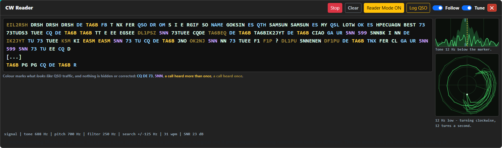
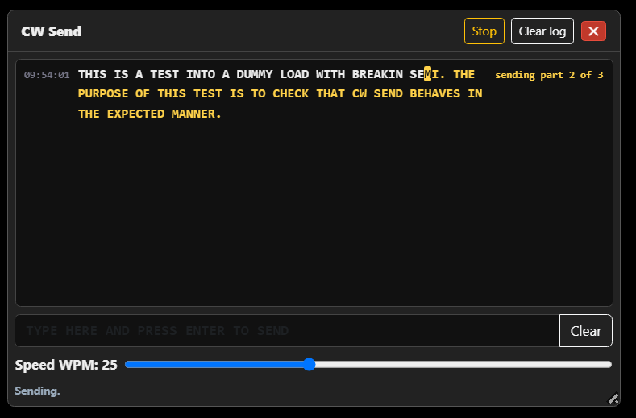
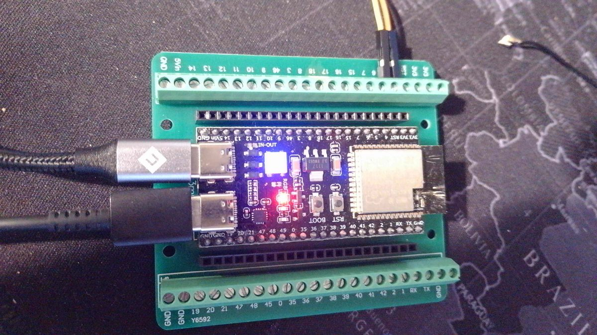
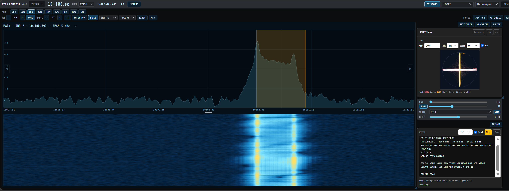
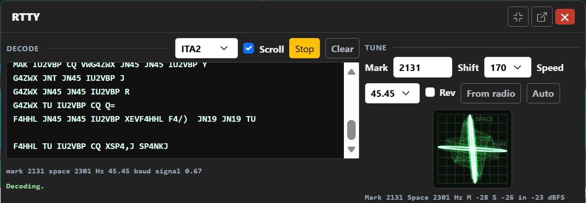

Run your transceiver from any browser
Yaesu Web Control and Icom Web Control put your radio on your PC, tablet or phone: a live spectrum, meters, CW reading and sending, RTTY decoding, a screen for RTTY contests, DX spots and more. Both are free and open source.
In both programs
Everything in this section is in Yaesu Web Control and Icom Web Control alike. Each has four views of the radio: the Classic page, the dockable Experimental UI, the Radio panel, which is laid out like the front of a radio with working keys, knobs and main dial, and RTTY Contest, a screen just for RTTY contesting.


Classic: written for partially sighted operators
I wrote this because I can't see the FTdx101MP's controls without a magnifying glass, and many of the IC-7300's controls are tucked away on touchscreen menu pages. The Classic page was written specifically with partially sighted operators in mind, so that they can operate the radio using a screen reader and voice control.
It works with NVDA and Windows Narrator, and you can say the band, mode or frequency you want. The program can speak band, mode and TX changes, DX alerts and TX timeout warnings, so you know what the radio is doing without looking at the screen. It works with Windows High Contrast, and you can rename the labels in any language.
CW Reader
The CW Reader prints the Morse in the radio's receive audio as text, with no extra hardware and nothing transmitted. Reader Mode sets the radio up for copy and puts your settings back when you stop. The status line says what it is hearing, and when it isn't sure it says so rather than guessing. Each session is saved as a transcript, and contacts go to an ADIF file. Manual: YWC | IWC


CW Send: type it and the radio sends it
Type a line and press Enter, and the radio keys it. You need only the cable that already goes to the radio. The character being keyed is highlighted as it goes, you can type ahead, and Stop or Escape cuts it short. With break-in off, it goes to the sidetone and nothing is transmitted.
On the IC-7300 it hasn't yet been used on air by a CW operator, so feedback is especially welcome. Manual: YWC | IWC
CW Paddle: send with your own paddle
For when the radio is somewhere else: a remote station, the shack at the bottom of the garden, or a laptop in another room. At the radio, plug the paddle into its KEY jack as usual. The paddle goes into a small USB adapter that shows up as a MIDI device, plugged into the computer your browser runs on. The keyer and sidetone run in the browser, so what you hear never waits on the network, and it starts in dry run so you can practise without transmitting.
The adapter can be a paddle-to-MIDI converter such as the HaliKey MIDI, or an ESP32-S3 board that you program from the page with one button. The ESP32 is only three wires: dit to GPIO4, dah to GPIO5 and the paddle's common to GND, with no resistors.
It has to be a board whose native USB port is on a socket. I use an ESP32-S3-DevKitC-1, which has two USB sockets: the adapter uses the one marked USB, not the one marked COM or UART. The original ESP32 and the ESP32-C3 won't work. The page needs Chrome or Edge.
New and still being tested. It has been tested on a Yaesu but has not yet keyed an IC-7300, so please tell me how it goes. Manual: YWC | IWC

RTTY tuner and RTTY Contest
The RTTY tuner draws the crossed-ellipse tuning scope and decodes the text, and Auto sets the tones up from the signal. The Icom picture is the German weather station DDK9 on 10.1008 MHz, where Auto measured a 450 Hz shift, 50 baud and reversed tones. Manual: YWC | IWC
RTTY Contest is a screen with only what a contest RTTY operator uses: the frequency, band keys that land on each band's RTTY spot, the spectrum over the waterfall, and the tuner docked at the side with its decoded text. There is a tuning dial, your memories, and DX spots. Every part can go to a window of its own, and named layouts put every window back on its own monitor. Bruce VK2RT asked for it and tested it. It is still being tested. Manual: YWC | IWC
RTTY is receive only: transmit from your logger, or from MMTTY.


DX spots and watch list
DX cluster spots on the spectrum, and a popup and beep when a callsign or prefix you're watching appears. Watched stations are drawn in red.
Voice control
Change band, mode and frequency by speaking. Recognition runs locally on your PC, with no cloud service. Windows only.
Pop-out windows
Move the spectrum, tuner and other panels to windows of their own on another monitor.
TX timeout warning
A red banner and tone if you've been transmitting too long, to catch an open mic or a stuck PTT.
Memories
Memory banks with ADIF import.
Radio power
Switches the radio on when the program starts, and can switch it off when it closes.
Works with your logger
Integrates with WSJT-X, Log4OM, JTAlert and GridTracker, with a built-in rigctld bridge so they can share the radio.
Yaesu Web Control
YWCBrowser-based control for Yaesu HF transceivers. As well as everything in both programs, YWC has an SDR spectrum for each receiver, the radio's own screen in the browser, and audio to and from the browser. As well as the Windows installer, there are macOS, Linux and Docker versions of YWC, which also run on a Raspberry Pi.


SDR spectrum and waterfall
Live panadapter and waterfall from an SDRplay or other SDR, or the radio's own scope. Show Main, Sub, or both receivers at once.
The radio's screen in your browser
The radio's own TFT screen, captured from its DVI socket, and it's clickable. Click a signal on the scope or waterfall and the radio tunes straight to it. Tested on the FTdx101MP/D and FTdx10. The FT-710 also has a DVI output, but this hasn't been tested.
Remote audio
The radio's receive audio in the browser's speakers, and the browser's microphone into the radio. For your own network or a VPN.
Supported radios
Runs on
The SDR spectrum display is Windows only. On macOS, Linux and Docker you can use the radio's own screen instead, captured from its DVI socket. These versions are the work of Fabio Valente, CR7CDC.
The installer isn't code-signed, so Windows or your antivirus may warn about it. Here's what to do.
Icom Web Control
IWCThe companion to YWC for Icom CI-V transceivers. As well as everything in both programs, IWC gives you frequency and mode, meters, PTT, the RX DSP, ATU and the radio's own spectrum scope for both VFOs from the browser, with no SDR needed.


CI-V spectrum scope
The radio's own scope and waterfall, streamed to the browser.
Watch both VFOs
A scope for VFO A and one for VFO B, even on different bands. X-Watch looks at the other band every few seconds, and one click turns it off during a QSO.
Back up the radio's menu
On the MkII, save the radio's own menu settings to a file and put them back.
Supported radios
Runs on
The installer isn't code-signed, so Windows or your antivirus may warn about it. Here's what to do.
Yaesu ACC Spectrum
NewThe FTdx101 sends its own scope data out of the ACC socket on the back. With an ESP32-S3 board, a cable and six resistors, I read it on the PC over USB: the Main and Sub spectrum, 25 times a second, with the frequencies, the span and the audio scope, all from the radio's own data. No SDR, no IF tap and nothing inside the radio. It's receive-only: nothing here keys the radio.


Main and Sub, from the radio
850 points a row for each receiver, with the VFO, the span and Center, Cursor or Fix all in the radio's own data, so there's no CAT polling and Cursor and Fix work too.
My own firmware
Written from scratch for the ESP32-S3, one file to flash. It also counts the signals on each wire, to check the wiring.
A library for other programs
A .NET library under the LGPL, so loggers and other programs can show the spectrum too, and the data format is written down for any language. Yaesu Web Control will use it next.
Tested on
The FTdx101D should be the same, but I haven't been able to try one.
You need
This is an experiment, and you wire your radio at your own risk. One ACC pin carries 13.8 V and two key the transmitter, so follow the bench notes in the project before you plug anything in.
About
I'm Colin, MM5AGM, in Scotland. I write YWC, IWC and ACC Spectrum for my own station, an FTdx101MP with an SDRplay for the spectrum and an IC-7300 MkII on the bench, and share them so other operators can use them too.
Thanks to Fabio Valente, CR7CDC, for the radio-screen capture, Remote Audio, the Experimental UI, and the macOS, Linux and Docker versions of YWC, including running it on a Raspberry Pi. Thanks also to Bruce, VK2RT, whose requests and testing shaped RTTY Contest, and to NK8O, whose FT-991A Companion gave me the idea for how to key a radio from a remote paddle.
If your radio, mode or setup is different from mine, I'd like to hear how you get on. Even a one-line "works fine" helps. Post on GitHub Discussions or open an issue on either project, or email me at mm5agm@outlook.com.